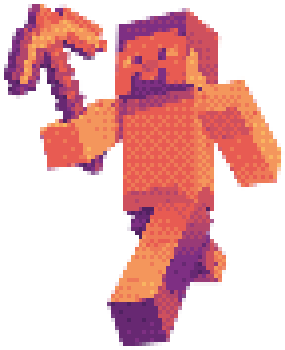

UltraNX world
Добро пожаловать в UltraNX world — место, где владельцы Nintendo Switch могут играть в Minecraft вместе.
Сервер создан для сообщества пользователей Ultra и Horizon NX. Заходи, знакомься и присоединяйся к игре!
А что такое Horizon NX?
Это версия Minecraft, переписанная с Java на Rust. Благодаря этому она обеспечивает более высокую производительность и открывает возможность комфортнее играть на Nintendo Switch.
Horizon NX поддерживает подключение к обычным Java-серверам — без установки дополнительных плагинов и модов на сервер.
Установка
- Скачать сборку
-
Распакуйте архив на SD-карту вашего Switch так,
чтобы получилось:/switch/horizon/(файлы) -
Создайте форвардер через DBI:
1. Установленные homebrew
2. Наведитесь на HorizonNX и нажмите +
3. Создать форвардер -
Измените ваш никнейм в
horizon-player.txt. -
Опционально: установите шейдеры и ресурспаки.